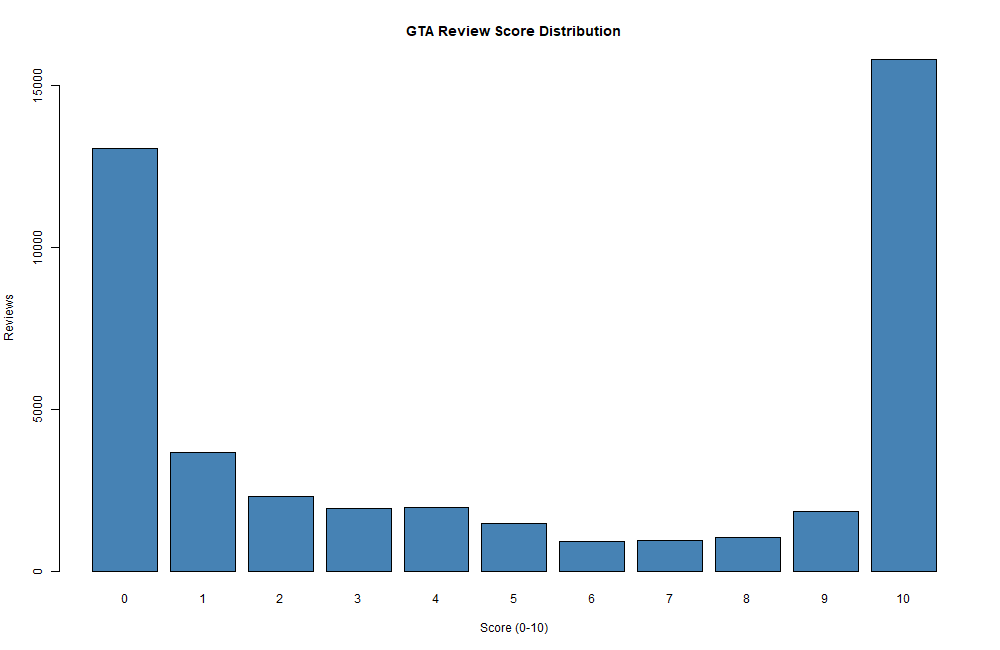
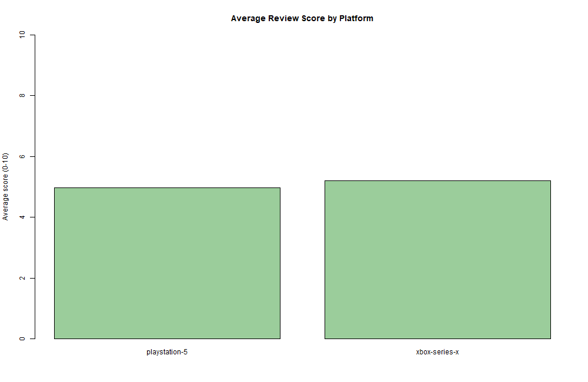
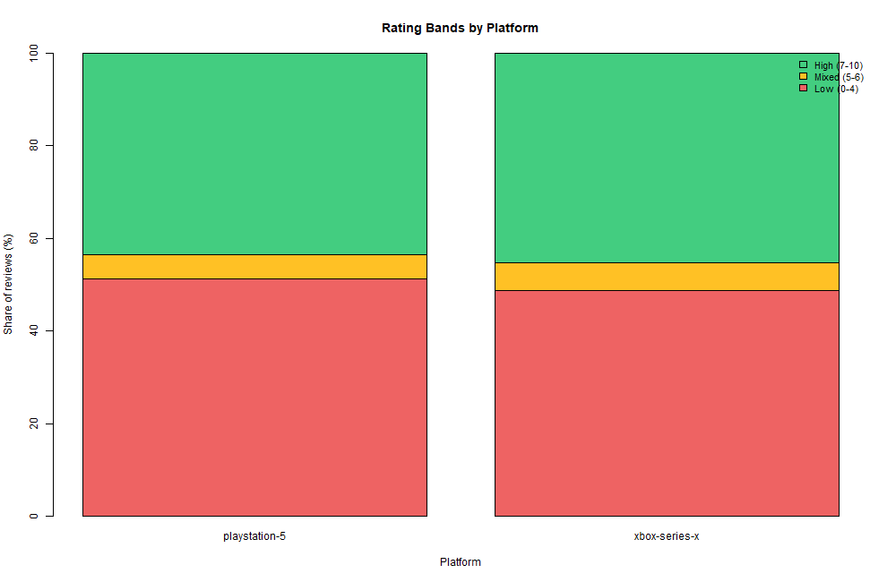
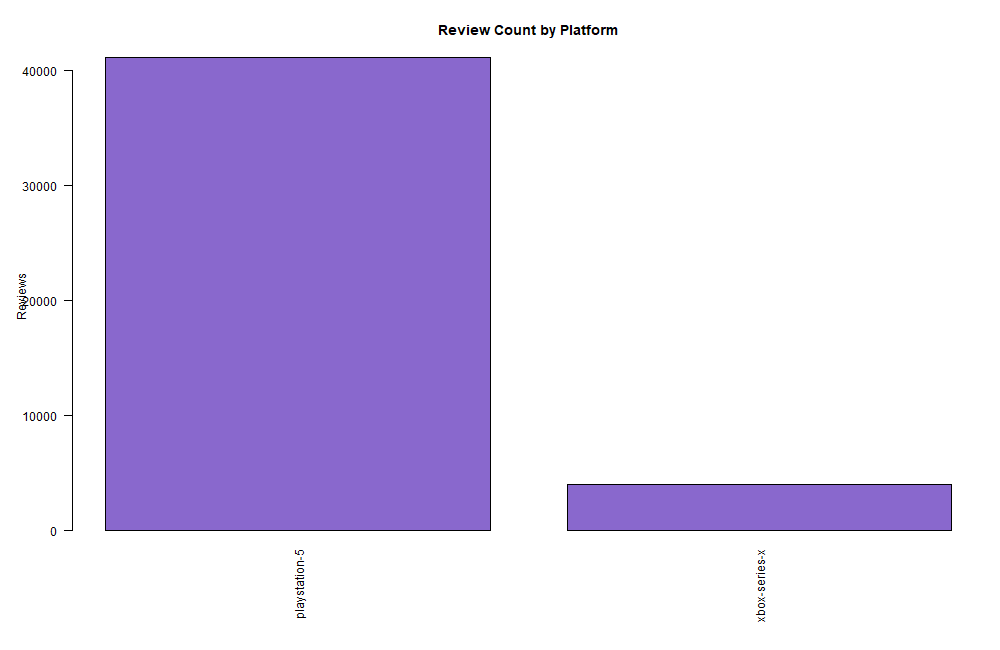
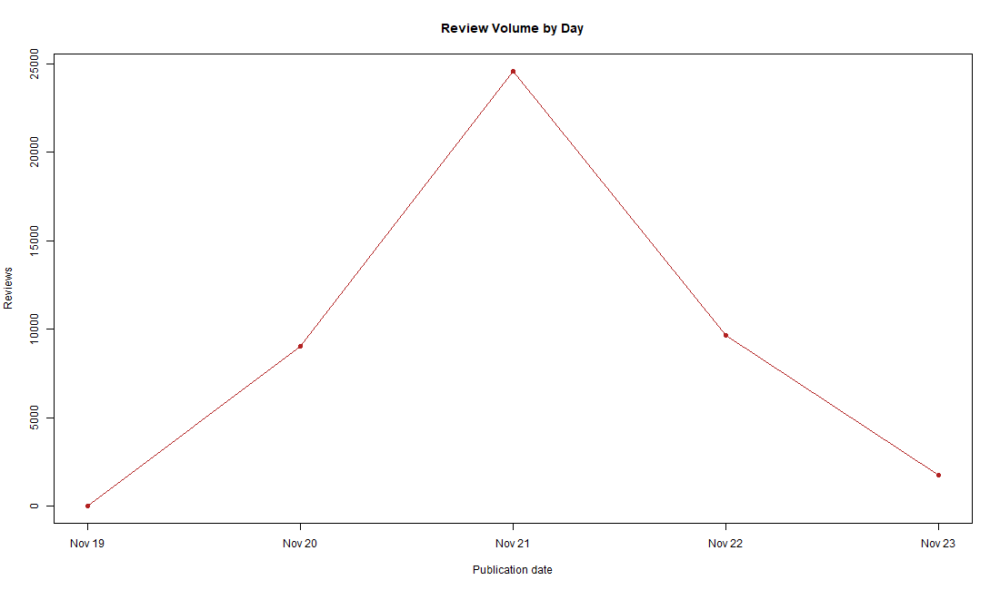
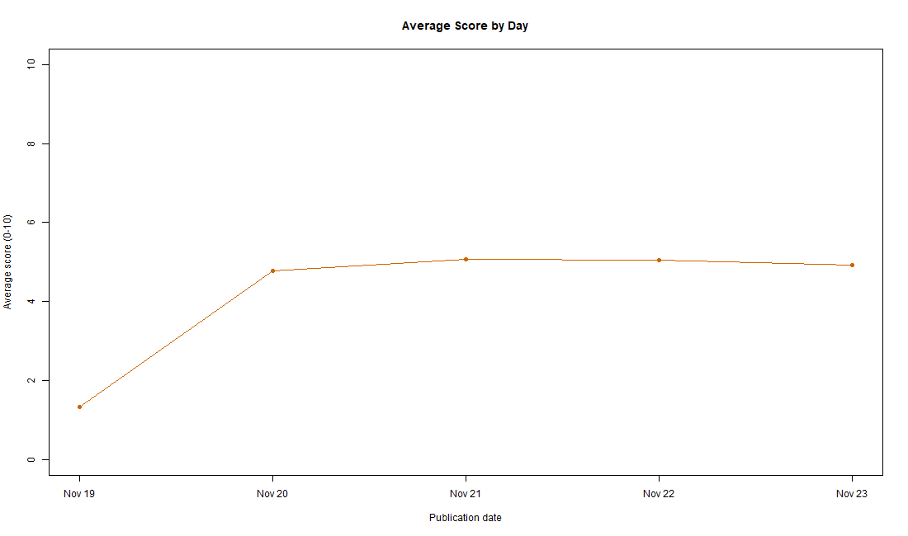
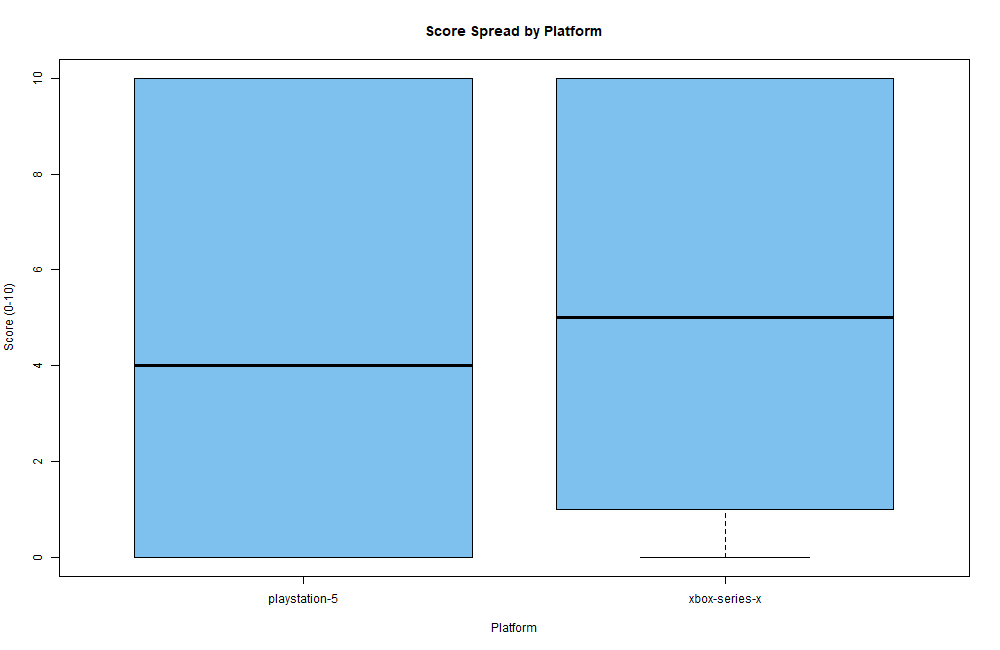
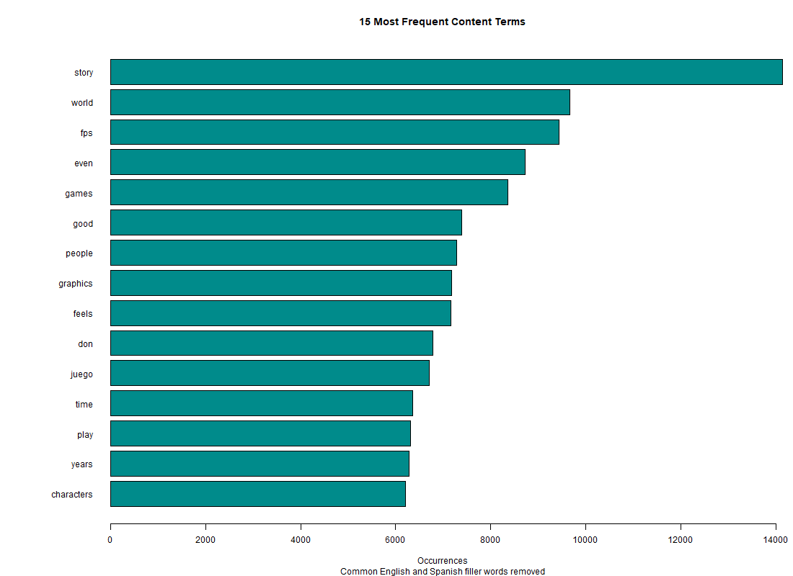
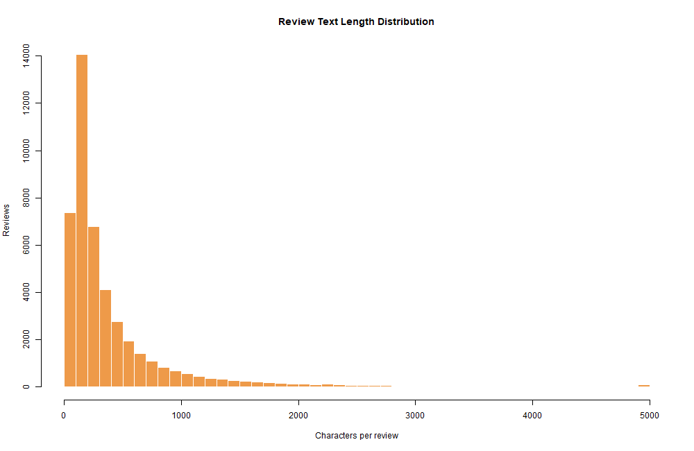

Score distribution
Number of reviews at each score from 0 to 10.

45064 unique reviews · 19 Nov 2026 to 23 Nov 2026 · scores from 0 to 10
Scores summarize the reviews in this file. Platform review counts are uneven, so these figures do not establish why ratings differ.
| Platform | Reviews | Average score | Median score | Scores 7-10 |
|---|---|---|---|---|
| PlayStation 5 | 41,116 | 4.97 / 10 | 4 / 10 | 43.5% |
| Xbox Series X | 3,948 | 5.21 / 10 | 5 / 10 | 45.2% |
Number of reviews at each score from 0 to 10.

Mean score for each platform; the scale runs from 0 to 10.

Each bar totals 100%, so compare the shares of low, mixed, and high scores.

The platform sample sizes differ, so score comparisons are descriptive.

Shows when reviews were published in the dataset.

Daily averages can move more when a day has fewer reviews.

The box shows the middle half of scores; the line marks the median.

Common English and Spanish filler words were filtered. Counts are word occurrences, not review counts or sentiment.

Each review is measured by its number of characters.

For this project, low = 0–4, mixed = 5–6, and high = 7–10. These are simple reporting bands.
| Score group | Reviews | Share of reviews |
|---|---|---|
| Low (0-4) | 22,967 | 51.0% |
| Mixed (5-6) | 2,407 | 5.3% |
| High (7-10) | 19,690 | 43.7% |
The percentage is each word’s share of all remaining token occurrences after common filler words were filtered. This is a frequency count, not sentiment analysis.
| Content word | Occurrences | Share of content words |
|---|---|---|
| story | 14,139 | 0.827% |
| world | 9,662 | 0.565% |
| fps | 9,437 | 0.552% |
| even | 8,727 | 0.510% |
| games | 8,365 | 0.489% |
| good | 7,390 | 0.432% |
| people | 7,286 | 0.426% |
| graphics | 7,173 | 0.419% |
| feels | 7,165 | 0.419% |
| don | 6,787 | 0.397% |
| juego | 6,710 | 0.392% |
| time | 6,357 | 0.372% |
| play | 6,310 | 0.369% |
| years | 6,285 | 0.367% |
| characters | 6,205 | 0.363% |
The source had 46,105 rows. 1,041 repeated review-ID rows were removed, keeping the first record for each ID. 0 rows with invalid score or date were excluded. Review length is measured in characters.
CSV tables: KPIsPlatform summaryScoresDaily summaryScore groupsContent words